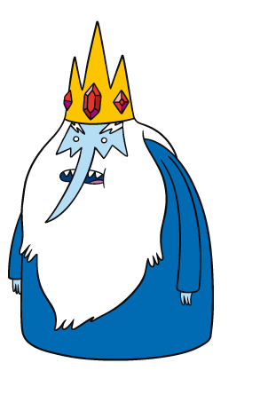

Alex Shum
November 18, 2015
#"
Languages: R, Java, C/C++, Python
Github: www.github.com/ALShum
URL: www.ALShum.com
Twitter: @NotAlexShum
library(shiny)
shinyUI(
fluidPage(
titlePanel("Hello World!"),
sidebarPanel(
sliderInput("obs",
"Number of observations:",
min = 1,
max = 1000,
value = 500)
),
# Show a plot of the generated distribution
mainPanel(
plotOutput("distPlot")
)
)
)
library(shiny)
# Define server logic required to generate and plot a random distribution
shinyServer(
function(input, output) {
output$distPlot <- renderPlot({
dist <- rnorm(input$obs)
hist(dist)
})
}
)
shinyUI function -- often in its own file: ui.R.shinyServer -- often in its own file: server.R.A = 100
B = A + 1
A = 200
What is the value of B at the end of this code segment?
B == 101B == 201ui.R
library(shiny)
shinyUI(
fluidPage(
titlePanel("Weather Plotter"),
column(4,
textInput(
inputId = "location_id",
label = "Enter location: ",
value = "California/San_Diego"
),
actionButton(
inputId = "submit_loc",
label = "Submit"
)
),
column(8,
dygraphs::dygraphOutput("dygraph1")
)
)
)
Server.R
library(shiny)
shinyServer(
function(input, output, session) {
rv_data = reactiveValues(
forecast_xts = NULL
)
observeEvent(
eventExpr = input[["submit_loc"]],
handlerExpr = {
data = rwunderground::hourly10day(input[["location_id"]])
data_temp = data["temp"]
forecast_xts = xts::xts(data_temp, order.by = data$date)
rv_data$forecast_xts = forecast_xts
}
)
rct_get_data = reactive({
validate(
need(rv_data$forecast_xts, "Please query data from server")
)
rv_data$forecast_xts
})
output[["dygraph1"]] = renderDygraph({
dygraphs::dygraph(rct_get_data())
})
}
)
input and output parameters.
reactiveValues -- lists of reactive types.input is a reactiveValues list for data from the UI.output is a reactiveValues list with plots and output for the UI.shinyServer(
function(input, output, session) {
input: reactiveValues list from UIoutput: reactiveValues list to UISession contains other metadata for shiny rct_get_data = reactive({
validate(
need(rv_data$forecast_xts, "Please query data from server")
)
print("test")
rv_data$forecast_xts
})
Reactive Conductor:
rct_get_data: reactive is a type of reactive function. observeEvent(
eventExpr = input[["submit_loc"]],
handlerExpr = {
data = rwunderground::hourly10day(input[["location_id"]])
data_temp = data["temp"]
forecast_xts = xts::xts(data_temp, order.by = data$date)
rv_data$forecast_xts = forecast_xts
}
)
Reactive Observers:
reactive functions but they are not a function and thus have no return output.library(shiny)
